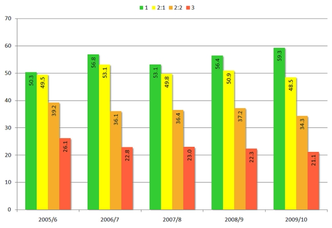
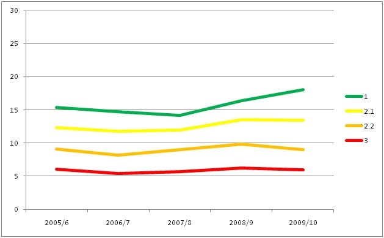
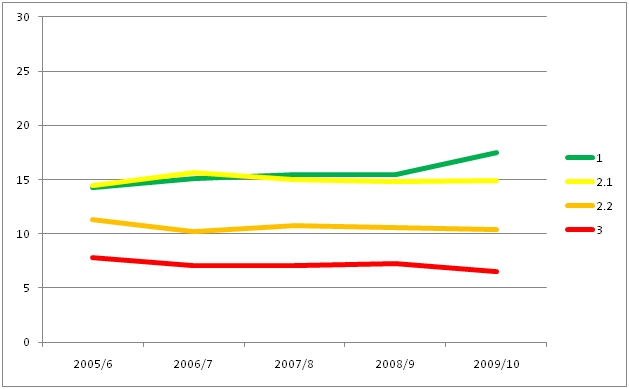
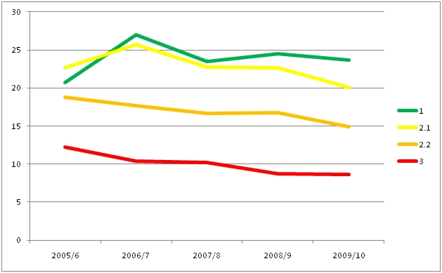

Benefits of Library Impact Data Project (LIDP)
Among other things the LIDP project looked at student borrowing of books over the life of their
degree. Because the use of e-resources has only been logged since 2005 the following discussion
only looks at book loans.
The following graph shows the average number of books borrowed by undergraduate students who
graduated with an specific honour (1, 2:1, 2:2 or 3) in that particular academic year. The data is
based on approximately 3,000 students graduating each year.

Number of books borrowed by students graduating in each year broken down by degree result
The correlation between eventual outcome and the number of books borrowed is established quite
early, even in the first year there is already a threefold difference in book borrowing between
students who will get a first and a third!

Number of books borrowed in their first year by students graduating in each year broken down by
degree result
As can be seen this is repeated in each of the subsequent years though note that the borrowing
levels of those students getting a first and two one are similar:

Number of books borrowed in their second year by students graduating in each year broken down
by degree result

Number of books borrowed in their third year by students graduating in each year broken down by
degree result